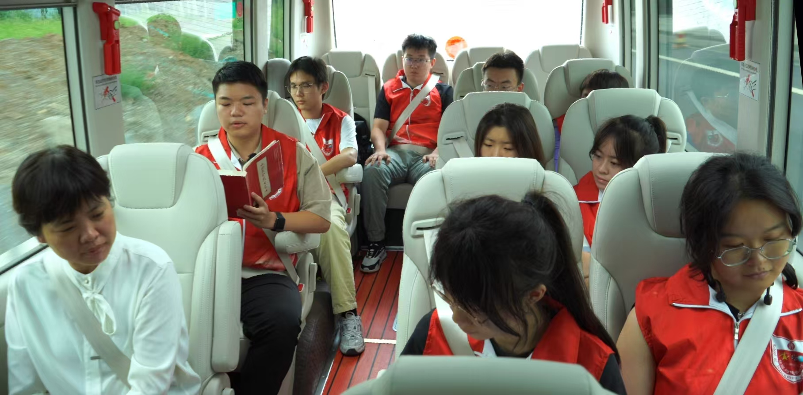

为深入学习贯彻习近平总书记关于青年工作的重要思想，全面总结暑期社会实践成果。中北大学“数智赋能百年红色家书”暑期社会实践活动总结会在中北大学马克思书屋举行。会议由实践团指导教师杜瑞平主持。中北大学“数智赋能百年红色家书” 暑期社会实践团和中北大学“北寻”雪芽合唱暑期社会实践团同学参加会议。
会上，杜瑞平老师对实践团成员圆满完成此次暑期社会实践活动表示祝贺，对仪电学子强信仰、治学问的生动实践给予充分肯定，对青年人“自找苦吃”的精神给予高度赞许，并对各位同学提出了“传承兵工精神，争做有为青年”的殷切希望。
队长阳博才同学展示了此次活动取得的成果。在10天的社会实践过程中，实践团成员不仅制作了一系列通过数字化手段重现的百年红色家书，也促成了中北大学大学生社会实践基地在麻田八路军总部纪念馆以及徐向前故居落地揭牌。红色记忆微课堂、抗战老兵口述史、家书诵读小播客、户外实景情景剧……每一份作品不仅是实践团成员对红色精神的致敬，更是对数智技术与红色文化融合的生动诠释。实践团成员践行“致知于行”的校训，让百年红色家书在现代技术的赋能下跨越时空，与当代青年产生深刻的共鸣。
中北大学“北寻”雪芽合唱暑期社会实践团队长栾智鹏向“数智赋能百年红色家书” 暑期社会实践活动的圆满成功表示祝贺。栾智鹏同学分享了“北寻”雪芽合唱暑期社会实践团如何通过艺术与科技的融合，让红色精神以歌声的形式，跨越时空，触动人心的实践经历。他认为，虽然“北寻”雪芽合唱暑期社会实践团的实践方向与“数智赋能百年红色家书”实践团有所不同，但在情感共鸣上，两团却紧密相连，都致力于传承红色文化，弘扬革命精神。栾智鹏同学的发言，不仅加强了兄弟实践团之间的交流与合作，更传递了青年学子对传承红色文化的共同愿景。
实践团成员依次上台分享了实践过程中的感悟。他们表示，在整理红色家书、走访革命老区的过程中，被先辈们无私奉献、英勇斗争的精神深深打动。这些故事不仅让实践团成员们的心灵受到了洗礼，也让在场的每一位听众感受到了红色信仰的力量。实践团成员们相信，家书可以成为连接过去与现在的情感桥梁，让红色记忆在每一代人心中继续传递。他们将继续探索数智技术与红色文化的融合，让数智赋能后的红色家书，成为传承红色文化、弘扬革命精神的强大力量。实践团成员将继承先烈遗志，让红色基因在新时代中继续传承，让红色精神成为指引前进的灯塔。
分享环节结束后，实践团成员在杜瑞平老师的带领下写下了一封封特殊的家书——致未来社会实践团成员的一封信。实践团成员们在信中不仅回顾了自己参与实践活动的点点滴滴，更表达了对后来者的鼓励与期待。实践团队长阳博才同学表示：“我们希望通过这些家书，能够将我们此次社会实践活动的经历、感悟和对红色文化的热爱，传递给未来的实践者。我们相信，每一代人都有责任和使命，去传承和弘扬红色文化，让这份宝贵的精神财富在新时代中继续发光发热。” 这一封封特殊的家书，不仅是一次情感的传递，更是一次使命的接力。这些家书会被保存在“数智赋能百年红色家书”暑期社会实践活动的起点——校史馆中，等待下一届社会实践团的成员们亲启。
会议尾声，院党委副书记杜瑞平再次对实践团队的辛勤付出表示了高度的赞扬，并对未来提出了美好的展望。她强调，实践团成员利用专业所学，用数智技术为红色文化的传播与传承开辟了新的路径，让红色记忆在新时代中焕发了新的活力，充分展示了仪电学子的风采和担当。
本次暑期社会实践活动总结会的成功召开，为“数智赋能百年红色家书”暑期社会实践活动画上了圆满的句号。让我们期待，越来越多的青年学子能够参与到社会实践活动中来，让实践收获成为激励青年学子不断前行的力量源泉。
数智赋新能 实践结硕果
2024年08月21日